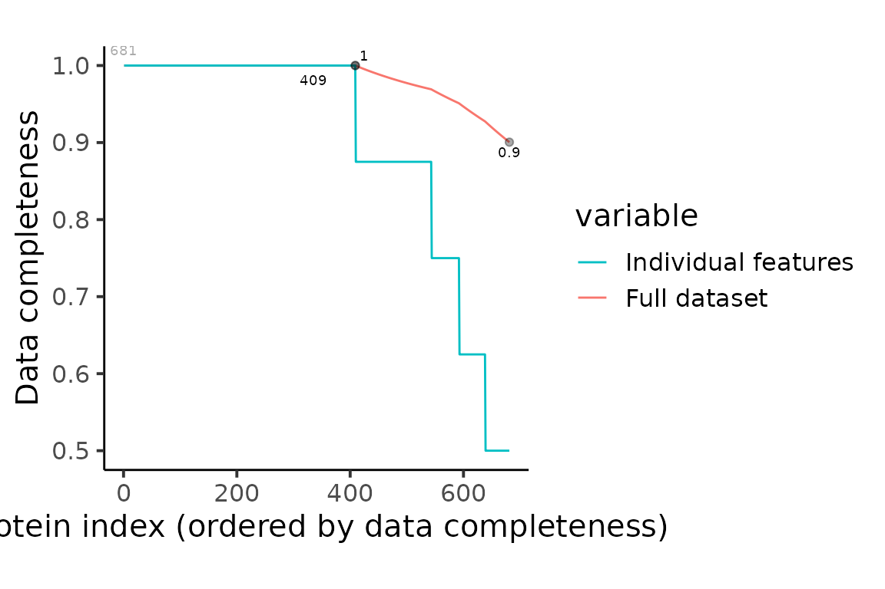
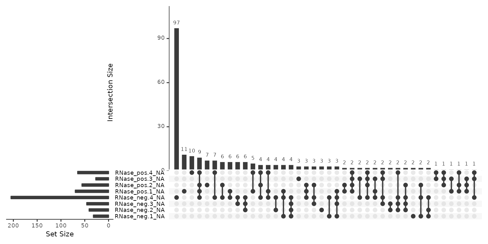
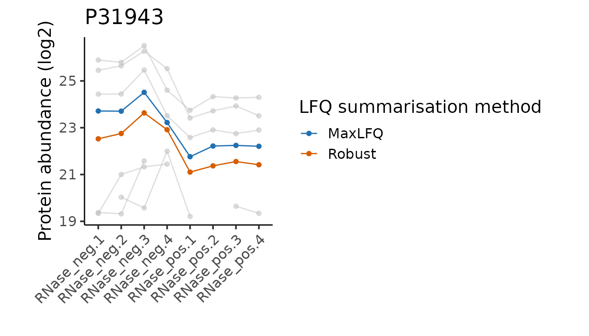
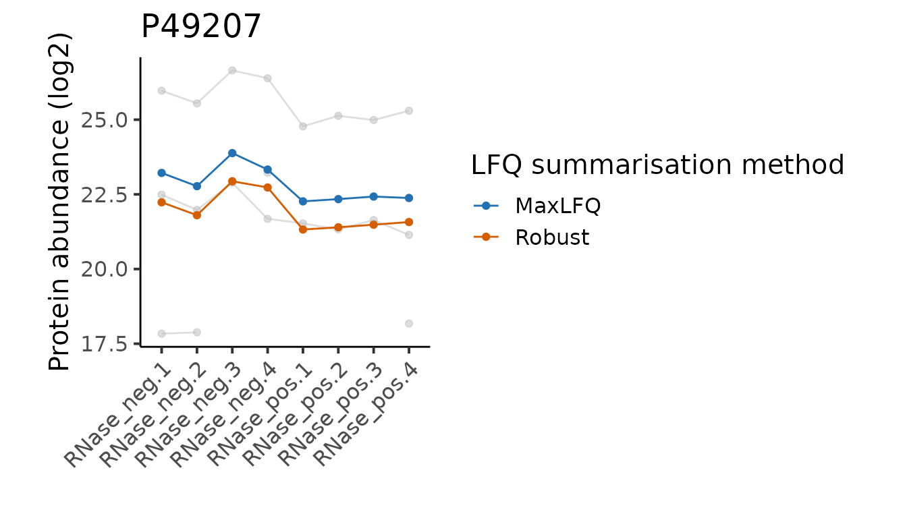
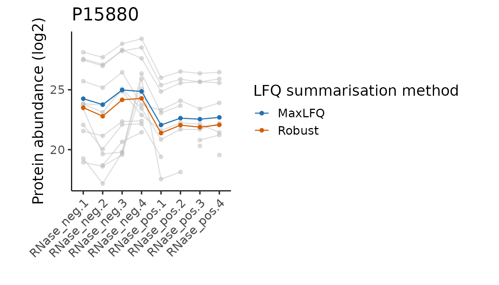
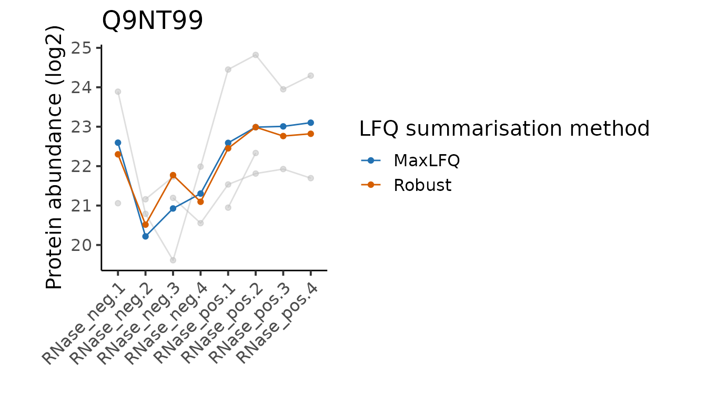
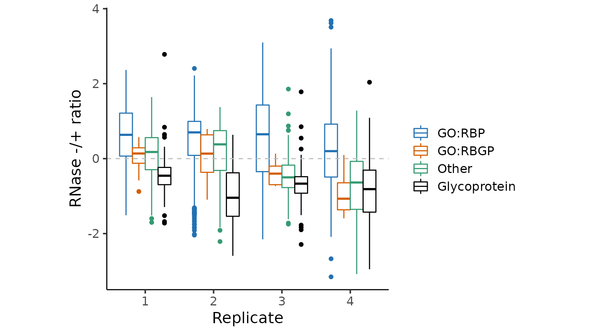
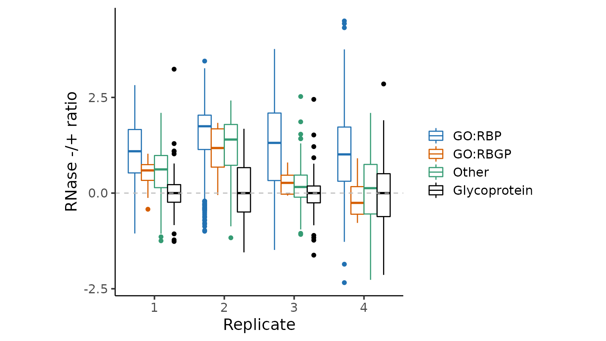

Label-free Quantification Proteomics
Tom Smith
2022-04-19
LFQ.Rmd
library(ggplot2)
library(MSnbase)
#> Loading required package: BiocGenerics
#>
#> Attaching package: 'BiocGenerics'
#> The following objects are masked from 'package:stats':
#>
#> IQR, mad, sd, var, xtabs
#> The following objects are masked from 'package:base':
#>
#> anyDuplicated, append, as.data.frame, basename, cbind, colnames,
#> dirname, do.call, duplicated, eval, evalq, Filter, Find, get, grep,
#> grepl, intersect, is.unsorted, lapply, Map, mapply, match, mget,
#> order, paste, pmax, pmax.int, pmin, pmin.int, Position, rank,
#> rbind, Reduce, rownames, sapply, setdiff, sort, table, tapply,
#> union, unique, unsplit, which.max, which.min
#> Loading required package: Biobase
#> Welcome to Bioconductor
#>
#> Vignettes contain introductory material; view with
#> 'browseVignettes()'. To cite Bioconductor, see
#> 'citation("Biobase")', and for packages 'citation("pkgname")'.
#> Loading required package: mzR
#> Loading required package: Rcpp
#> Loading required package: S4Vectors
#> Loading required package: stats4
#>
#> Attaching package: 'S4Vectors'
#> The following objects are masked from 'package:base':
#>
#> expand.grid, I, unname
#> Loading required package: ProtGenerics
#>
#> Attaching package: 'ProtGenerics'
#> The following object is masked from 'package:stats':
#>
#> smooth
#>
#> This is MSnbase version 2.20.4
#> Visit https://lgatto.github.io/MSnbase/ to get started.
#>
#> Attaching package: 'MSnbase'
#> The following object is masked from 'package:base':
#>
#> trimws
library(biobroom)
#> Loading required package: broom
#> Registered S3 methods overwritten by 'biobroom':
#> method from
#> glance.list broom
#> tidy.list broom
library(camprotR)
library(Proteomics.data.analysis)
library(dplyr)
#>
#> Attaching package: 'dplyr'
#> The following object is masked from 'package:MSnbase':
#>
#> combine
#> The following objects are masked from 'package:S4Vectors':
#>
#> first, intersect, rename, setdiff, setequal, union
#> The following object is masked from 'package:Biobase':
#>
#> combine
#> The following objects are masked from 'package:BiocGenerics':
#>
#> combine, intersect, setdiff, union
#> The following objects are masked from 'package:stats':
#>
#> filter, lag
#> The following objects are masked from 'package:base':
#>
#> intersect, setdiff, setequal, union
library(tidyr)
#>
#> Attaching package: 'tidyr'
#> The following object is masked from 'package:S4Vectors':
#>
#> expandInput data
We start with the peptide-level output from Proteome Discoverer (PD). This experiment was designed to identify RNA-binding proteins (RBP) in the U-2 OS cell line using the OOPS method (Queiroz et al. 2019) with a comparison of RNase +/- used to separate RBPs from background non-specific proteins. 4 replicate experiments were performed, where the RNase +/- experiments were performed from the same OOPS interface. For each LFQ run, approximately the same quantity of peptides were injected, based on quantification of peptide concentration post trypsin digestion. This data is not published but the aim of the experiment is equivalent to Figure 2e in the original OOPS paper(Queiroz et al. 2019).
The data we will use is available through this package. This is simply a PeptideGroups.txt file from PD which has been read into memory using read.delim(<PeptideGroups.txt>"), where <PeptideGroups.txt> is the path to the PeptideGroups file.
pep_data <- lfq_all_oops_rnase_pepWe can explore the structure of the input data using str. We see that we have a data.frame() with 7808 rows and 41 columns. The most important columns to us are:
- Sequence: The sequence of the peptide
- Modifications: The detected peptide modifications, including variable, e.g induced modifications such as oxidation
- Master.Protein.Accessions: The assigned master protein(s)
- Abundance.F*.Sample: Columns with the peptide intensities
str(pep_data)
#> 'data.frame': 7808 obs. of 41 variables:
#> $ Peptide.Groups.Peptide.Group.ID : int 3 103128 103062 103059 103056 103049 103048 103045 102936 102916 ...
#> $ Checked : chr "False" "False" "False" "False" ...
#> $ Confidence : chr "High" "High" "High" "High" ...
#> $ Sequence : chr "AAAAAAAAAAAAAAAGAGAGAK" "LVKPGNQNTQVTEAWNK" "LVGSVNLFSDENVPR" "LVGSQEELASWGHEYVR" ...
#> $ Modifications : chr "" "" "" "" ...
#> $ Qvality.PEP : num 4.27e-07 8.31e-04 1.36e-03 7.92e-04 1.87e-06 ...
#> $ Qvality.q.value : num 0.00026 0.00026 0.00026 0.00026 0.00026 ...
#> $ Number.of.Protein.Groups : int 1 1 1 1 1 1 1 1 1 1 ...
#> $ Number.of.Proteins : int 1 1 1 1 1 1 1 1 1 1 ...
#> $ Number.of.PSMs : int 8 8 4 8 16 7 26 12 10 11 ...
#> $ Master.Protein.Accessions : chr "P55011" "Q9UQ80" "Q9BQG0" "Q13200" ...
#> $ Protein.Accessions : chr "P55011" "Q9UQ80" "Q9BQG0" "Q13200" ...
#> $ Number.of.Missed.Cleavages : int 0 0 0 0 0 1 0 0 0 1 ...
#> $ Theo.MHplus.in.Da : num 1597 1927 1646 1960 1515 ...
#> $ Abundance.F17.Sample : num 1927597 3768782 NA NA 6090638 ...
#> $ Abundance.F18.Sample : num 3540084 6682988 NA NA 12042683 ...
#> $ Abundance.F19.Sample : num 3466165 14879391 NA NA 19815360 ...
#> $ Abundance.F20.Sample : num 789214 1826370 NA NA 3435918 ...
#> $ Abundance.F21.Sample : num 1425166 NA NA NA 1736376 ...
#> $ Abundance.F22.Sample : num 2515468 1258701 NA NA 2838919 ...
#> $ Abundance.F23.Sample : num 2426854 1511282 NA NA 3298768 ...
#> $ Abundance.F24.Sample : num 1370120 819806 NA NA 1711976 ...
#> $ Quan.Info : chr "" "" "NoQuanValues" "NoQuanValues" ...
#> $ Found.in.Sample.in.S17.F17.Sample : chr "High" "High" "High" "High" ...
#> $ Found.in.Sample.in.S18.F18.Sample : chr "High" "High" "High" "High" ...
#> $ Found.in.Sample.in.S19.F19.Sample : chr "High" "High" "Not Found" "High" ...
#> $ Found.in.Sample.in.S20.F20.Sample : chr "High" "High" "Not Found" "Not Found" ...
#> $ Found.in.Sample.in.S21.F21.Sample : chr "High" "Not Found" "Not Found" "Not Found" ...
#> $ Found.in.Sample.in.S22.F22.Sample : chr "High" "High" "Not Found" "Not Found" ...
#> $ Found.in.Sample.in.S23.F23.Sample : chr "High" "Peak Found" "Not Found" "High" ...
#> $ Found.in.Sample.in.S24.F24.Sample : chr "High" "Peak Found" "Not Found" "Not Found" ...
#> $ Confidence.by.Search.Engine.MS.Amanda.20 : chr "n/a" "High" "High" "High" ...
#> $ Confidence.by.Search.Engine.Sequest.HT : chr "High" "High" "High" "High" ...
#> $ Percolator.q.Value.by.Search.Engine.MS.Amanda.20 : num NA 0.000358 0.000434 0.000347 0.000434 ...
#> $ Percolator.q.Value.by.Search.Engine.Sequest.HT : num 0.00041 0.000469 0.000457 0.00041 0.000469 ...
#> $ Percolator.PEP.by.Search.Engine.MS.Amanda.20 : num NA 3.76e-04 6.54e-04 3.47e-04 1.06e-06 ...
#> $ Percolator.PEP.by.Search.Engine.Sequest.HT : num 3.16e-07 3.91e-04 3.71e-04 1.21e-03 1.69e-06 ...
#> $ Amanda.Score.by.Search.Engine.MS.Amanda.20 : num NA 45.4 81.1 65.3 132.2 ...
#> $ CharmeRT.Combined.Score.by.Search.Engine.MS.Amanda.20: num NA 45.4 81.1 65.3 132.2 ...
#> $ XCorr.by.Search.Engine.Sequest.HT : num 5.77 3 4.34 4.37 3.85 5.92 3.09 4.3 2.92 3.58 ...
#> $ Top.Apex.RT.in.min : num 65.7 57.8 NA NA 66.6 ...The samples analysed are as follows:
sample_data <- data.frame(
File = paste0("F", 17:24),
Sample = paste0(rep(c("RNase_neg", "RNase_pos"), each = 4), ".", 1:4),
Condition = rep(c("RNase_neg", "RNase_pos"), each = 4),
Replicate = rep(1:4, 2)
)
knitr::kable(sample_data)| File | Sample | Condition | Replicate |
|---|---|---|---|
| F17 | RNase_neg.1 | RNase_neg | 1 |
| F18 | RNase_neg.2 | RNase_neg | 2 |
| F19 | RNase_neg.3 | RNase_neg | 3 |
| F20 | RNase_neg.4 | RNase_neg | 4 |
| F21 | RNase_pos.1 | RNase_pos | 1 |
| F22 | RNase_pos.2 | RNase_pos | 2 |
| F23 | RNase_pos.3 | RNase_pos | 3 |
| F24 | RNase_pos.4 | RNase_pos | 4 |
Parse input data and remove contaminants
Before we start to parse the input data, we need to identify the contaminant proteins, which were supplied to Proteome Discoverer. We want to remove these from the data. These were defined using the cRAP database. Below, we parse the cRAP FASTA to extract the IDs for the cRAP proteins, in both ‘cRAP’ format and UniProt accessions for these proteins to be completely sure we are remoing all cRAP.
Again, the file we will use cRAP_20190401.fasta.gz is available through the camprotR package.
crap_fasta_inf <- system.file(
"extdata", "cRAP_20190401.fasta.gz",
package = "camprotR"
)
# Load the cRAP FASTA used for the PD search
crap_fasta <- Biostrings::fasta.index(crap_fasta_inf, seqtype = "AA")
# Extract the UniProt accessions associated with each cRAP protein
crap_accessions <- crap_fasta %>%
pull(desc) %>%
stringr::str_extract_all(pattern="(?<=\\|).*?(?=\\|)") %>%
unlist()We can then supply these cRAP protein IDs to camprotR::parse_features() which will remove features (i.e. peptides in this case) which may originate from contaminants, as well as features which don’t have a unique master protein.
See ?parse_features for further details, including the removal of ‘associated cRAP’ for conservative contaminants removal.
pep_data_flt <- camprotR::parse_features(
pep_data,
TMT = FALSE,
level = 'peptide',
crap_proteins = crap_accessions,
)
#> Parsing features...
#> 7808 features found from 1463 master proteins => Input
#> 242 cRAP proteins supplied
#> 364 proteins identified as 'cRAP associated'
#> 7509 features found from 1414 master proteins => cRAP features removed
#> 7476 features found from 1396 master proteins => associated cRAP features removed
#> 7471 features found from 1395 master proteins => features without a master protein removed
#> 7250 features found from 1307 master proteins => features with non-unique master proteins removedFrom the above, we can see that we have started with 7808 ‘features’ (peptides) from 1463 master proteins across all samples. After removal of contaminants and peptides that can’t be assigned to a unique master protein, we have 7250 peptides remaining from 1307 master proteins.
Convert to MSnSet
We now store the filtered peptide data in an MSnSet, the standard data object for proteomics in R. See the vignette("msnset", package="camprotR") for more details.
# Create expression matrix with peptide abundances (exprs) and human
# readable column names
exprs_data <- pep_data_flt %>%
select(matches("Abundance")) %>%
`colnames<-`(sample_data$Sample) %>%
as.matrix()
# Create data.frame with sample metadata (pData)
pheno_data <- sample_data %>%
select(-File) %>%
tibble::column_to_rownames(var = "Sample")
# Create data.frame with peptide metadata (fData)
feat_data <- pep_data_flt %>%
select(-matches("Abundance"))
# Create MSnSet
pep <- MSnbase::MSnSet(exprs = exprs_data,
fData = feat_data,
pData = pheno_data)QC peptides
First of all, we want to inspect the peptide intensity distributions. We expect these to be approximately equal and any very low intensity sample would be a concern that would need to be further explored. Here, we can see that there is some clear variability, but no sample with very low intensity.
pep %>%
log(base = 2) %>%
camprotR::plot_quant(method = 'density')
#> Warning: Removed 19289 rows containing non-finite values (stat_density).Peptide intensities
Next, we consider the missing values. Note that MSnbase::plotNA assumes the object contains protein-level data and names the x-axis accordingly. Here, we update the plot aesthetics and rename the x-axis
p <- MSnbase::plotNA(pep, pNA = 0) +
camprotR::theme_camprot(border = FALSE, base_family = 'sans', base_size = 10) +
labs(x = 'Peptide index')So, from the 7250 peptides, just 2085 have quantification values in all 8 samples. This is not a surprise for LFQ, since each sample is prepared and run separately.
print(p)
Data completeness, all peptides
We can explore the structure of the missing values further using an ‘upset’ plot.
missing_data <- pep %>%
exprs() %>%
data.frame()
naniar::gg_miss_upset(missing_data,
sets = paste0(colnames(pep), '_NA'),
keep.order = TRUE,
nsets = 10)Missing values upset plot
So in this case, we can see that the most common missing value patterns are:
- Missing in just RNase negative replicate 4
- Missing in all samples.
- Missing in all the other samples, except RNase negative replicate 4
RNase negative replicate 4 had slightly lower overall petide intensities and appears to be somewhat of an outlier. In this case, we will retain the sample but in other cases, this may warrant further exploration and potentially removal of a sample.
Finally, we recode the abundances to binary (present/absent) and plot the missing data structure as a heatmap (missing = black). Beyond the aforementioned observations regarding RNase negative replicate 4, there’s no clear structure in the missing values. This is what we would expect for LFQ, where data is largely missing at random (MAR). There are methods to impute values MAR, but, providing what we are after is protein-level abundance, it is usually more appropriate to perform the protein inference using a method that can accommodate missing values.
missing_data[!is.na(missing_data)] <- 1
missing_data[is.na(missing_data)] <- 0
gplots::heatmap.2(
as.matrix(missing_data),
col = c("black", "lightgray"),
scale = "none", # Don't re-scale the input
# Default is euclidean, which is less appropriate distance for binary vectors
distfun = function(x) dist(x, method = 'binary'),
trace = "none", # Don't include a trace. Improves appearance
key = FALSE, # Don't include a key as values are binary
Colv = FALSE, # Don't re-order the columns
labRow = FALSE, # Don't label the rows
cexCol = 0.7 # Reduce the column name size
)
#> Warning in gplots::heatmap.2(as.matrix(missing_data), col = c("black",
#> "lightgray"), : Discrepancy: Colv is FALSE, while dendrogram is `both'. Omitting
#> column dendogram.Presence/Absence heatmap
Normalise peptide intensities
We have injected the same quantity of peptides for each sample, so it’s reasonable to normalise the samples against one another. Here we will apply ‘center-median’ normalisation, which in MSnbase::normalise is called ‘diff.median’. Since the peptide intensities are log-Gaussian distributed, we log2-transform them before performing the normalisation.
pep_norm <- pep %>%
log(base = 2) %>%
MSnbase::normalise('diff.median')
pep_norm %>%
camprotR::plot_quant(method = 'density')
#> Warning: Removed 19289 rows containing non-finite values (stat_density).Protein intensities post-normalisation
Summarising to protein-level abundance
Before we can summarise to protein-level abundances, we need to exclude peptides with too many missing values. Here, peptides with more than 5/8 missing values are discarded, using MSnbase::filterNA(). We also need to remove proteins without at least two peptides. We will use camprotR::restrict_features_per_protein() which will replace quantification values with NA if the sample does not have two quantified peptides for a given protein. Note that this means we have to repeat the filtering process since we are adding missing values.
pep_restricted <- pep_norm %>%
MSnbase::filterNA(pNA = 4/8) %>% # Maximum 4/8 missing values
camprotR::restrict_features_per_protein(min_features = 2, plot = FALSE) %>% # At least two peptides per protein
# Repeat the filtering since restrict_features_per_protein will replace some values with NA
MSnbase::filterNA(pNA = 4/8) %>%
camprotR::restrict_features_per_protein(min_features = 2, plot = FALSE) We can then re-inspect the missing values. Note that we have reduced the overall number of peptides to 4971.
p <- MSnbase::plotNA(pep_restricted, pNA = 0) +
camprotR::theme_camprot(border = FALSE, base_family = 'sans', base_size = 15) +
labs(x = 'Peptide index')
print(p)Data completeness, retained peptides
We can now summarise to protein-level abundance. Below, we use ‘robust’ summarisation (Sticker et al. 2020) with MSnbase::combineFeatures(). This returns a warning about missing values that we can ignore here since the robust method is inherently designed to handle missing values. See MsCoreUtils::robustSummary() and this publication for further details about the robust method.
prot_robust <- pep_restricted %>%
MSnbase::combineFeatures(
# group the peptides by their master protein id
groupBy = fData(pep_restricted)$Master.Protein.Accessions,
method = 'robust',
maxit = 1000 # Ensures convergence for MASS::rlm
)
#> Your data contains missing values. Please read the relevant section in
#> the combineFeatures manual page for details on the effects of missing
#> values on data aggregation.We can then re-inspect the missing values at the protein level. So, we have quantification for 681 proteins, of which 409 are fully quantified across all 8 samples. The most common missing values pattern remains missing in just RNase negative replicate 4.
p <- MSnbase::plotNA(prot_robust, pNA = 0) +
camprotR::theme_camprot(border = FALSE, base_family = 'sans', base_size = 15)
print(p)
naniar::gg_miss_upset(data.frame(exprs(prot_robust)),
sets = paste0(colnames(prot_robust), '_NA'),
keep.order = TRUE,
nsets = 10)
We have now obtained protein-level abundances from our LFQ data. This is our recommended procedure for summarising from peptide to protein level abundances.
Alternatives for summarising to protein-level abundance - MaxLFQ
Although we recommend using the ‘robust’ summarisation, there are other algorithms that are commonly applied. For example MaxLFQ (Cox et al. 2014), which is implemented within MaxQuant, but also available via the iq::maxLFQ() function in the iq package in R (now available on CRAN).
# You may wish to retain more feature columns that this!
feature_coloumns_to_retain <- c("Master.Protein.Accessions")
# To ensure we are only comparing the protein inference method and not normalisation etc,
# we will use the same set of peptides for both inference methods
pep_data_for_summarisation <- pep_restricted %>%
exprs() %>%
data.frame() %>%
merge(fData(pep_restricted)[, feature_coloumns_to_retain, drop = FALSE],
by = 'row.names') %>%
select(-Row.names)Below, we use iq::maxLFQ() manually, though it should be possible to use this function within MSnbase::combineFeatures() too in theory since it accommodates user-defined functions.
# Define a function to perform MaxLFQ on a single protein and return a data.frame
# as required.
get_maxlfq_estimate <- function(obj) {
prot <- iq::maxLFQ(as.matrix(obj))$estimate
data.frame(t(prot)) %>%
setNames(colnames(obj))
}
# Group by the features we want to retain and use MaxLFQ on each protein
maxlfq_estimates <- pep_data_for_summarisation %>%
group_by(across(all_of(feature_coloumns_to_retain))) %>%
dplyr::group_modify(~ get_maxlfq_estimate(.)) %>%
ungroup()
# Create the protein-level MSnSet
maxlfq.e <- as.matrix(select(maxlfq_estimates, -Master.Protein.Accessions))
maxlfq.f <- data.frame(select(maxlfq_estimates, Master.Protein.Accessions))
maxlfq.p <- pData(pep_restricted)
prot_maxlfq <- MSnSet(exprs = maxlfq.e,
fData = maxlfq.f,
pData = maxlfq.p)
# Update the rownames to be the protein IDs
rownames(prot_maxlfq) <- maxlfq_estimates$Master.Protein.AccessionsWe can now compare the protein-level abundance estimates.
# Define a function to extract the protein abundances in long form and
# add a column annotating the method
get_long_form_prot_exp <- function(obj, method_name) {
tidy(obj) %>%
mutate(method = method_name)
}
# Single object with protein inference from both methods
compare_protein_abundances <- rbind(
get_long_form_prot_exp(prot_maxlfq, 'MaxLFQ'),
get_long_form_prot_exp(prot_robust, 'Robust')
)
# Plot direct comparison
compare_protein_abundances %>%
pivot_wider(names_from = method, values_from = value) %>% # pivot to wider form for plotting
ggplot(aes(x = Robust, y = MaxLFQ)) +
geom_point(alpha = 0.25, size = 0.5) +
theme_camprot(border = FALSE, base_family = 'sans', base_size = 15) +
geom_abline(slope = 1, colour = get_cat_palette(2)[2], linetype = 2, size = 1)Comparison of protein inference methods
There is a very good overall correlation. Let’s inspect a few proteins with the largest differences between the two approaches to see what’s going on for the edge cases.
# Identify proteins with largest difference between the protein summarisation methods
proteins_of_interest <- compare_protein_abundances %>%
pivot_wider(names_from = method, values_from = value) %>%
mutate(diff = MaxLFQ-Robust) %>%
arrange(desc(abs(diff))) %>%
pull(protein) %>%
unique() %>%
head(5)Below we define a function to plot the peptide and protein abundances for the two methods for a single protein. We can ignore the details since it’s the plots themselves we are interested in.
plot_pep_and_protein <- function(protein_of_interest) {
to_plot_compare <- compare_protein_abundances %>%
filter(protein == protein_of_interest)
pep_restricted[fData(pep_restricted)$Master.Protein.Accession == protein_of_interest] %>%
exprs() %>%
data.frame() %>%
tibble::rownames_to_column('id') %>%
pivot_longer(cols = -id) %>%
ggplot(aes(x = name, y = value)) +
geom_line(aes(group = id), colour = 'grey', alpha = 0.5) +
geom_point(colour = 'grey', alpha = 0.5) +
geom_line(data = to_plot_compare,
aes(x = sample.id, y = value, colour = method, group = method)) +
geom_point(data = to_plot_compare,
aes(x = sample.id, y = value, colour = method)) +
scale_colour_manual(values = get_cat_palette(2), name = 'LFQ summarisation method') +
theme_camprot(base_size = 15, border = FALSE, base_family = 'sans') +
theme(axis.text.x = element_text(angle = 45, vjust = 1, hjust = 1)) +
labs(
title = protein_of_interest,
x = '',
y = 'Protein abundance (log2)'
)
}Below we apply the above function to each of our proteins of interest.

#>
#> [[2]]
#>
#> [[3]]
#>
#> [[4]]
#>
#> [[5]]
Looking at these examples, we can see that MaxLFQ is often estimating slightly higher abundances but with a very similar profile across the samples is very similar, so the summarisation approach is unlikely to affect the downstream analysis. It’s not clear which of the two approaches is more correct in the examples above, but the publication proposing the robust protein inference (see here) does indicate it gives more accurate fold-change estimates overall.
We have now processed our peptide-level LFQ abundances and obtained protein-level abundances, from which we can perform our downstream analyses.
TOM - MOVE THIS SECTION TO AN OPTIONAL ‘EXTENSION’ notebook
Alternative normalisation - Using reference proteins
Finally, we consider an alternative normalisation approach where we have a strong prior expectation about the abundance of a subset of proteins. Our data is from an RNase +/- OOPS experiment. Since OOPS is known to enrich glycoproteins at the interface, we can use these proteins as an internal set of ‘housekeeping’ proteins which we expect to have no difference in abundance between RNase +/-.
First, we need to calculate the RNase +/- ratios, since this is the value we want to normalise. In other applications, you may wish to normalise the abundance estimates for each sample, rather than the ratio between samples.
ratios <- exprs(prot_robust[,pData(prot_robust)$Condition == 'RNase_neg']) -
exprs(prot_robust[,pData(prot_robust)$Condition == 'RNase_pos'])
prot_ratios <- MSnSet(exprs = ratios,
fData = fData(prot_robust),
pData = (pData(prot_robust) %>% filter(Condition == 'RNase_neg')))Next, we need annotations regarding which proteins are glycoproteins and GO-annotated RBPs. [Once a notebook has been added to cover GO annotations, reference to that here to avoid repeating explanations about why we want to expand the set of GO anntotations]
Get all GO terms for our proteins by querying UniProt programmatically.
up_url <- "https://www.uniprot.org/uploadlists/"
request <- list(
query = paste(rownames(prot_robust), collapse = " "),
from = "ACC+ID",
to = "ACC",
format = "tab",
columns = paste("id", "features", "go-id", sep = ",")
)
response <- httr::GET(url = up_url, query = request)
res <- httr::content(response, type = "text", encoding = "UTF8") %>%
read.table(text = ., sep = "\t", header = TRUE) %>%
select(Entry, Features, Gene.ontology.IDs)
go_long <- res %>%
separate_rows(Gene.ontology.IDs, sep = "; ")
# This step may take a minute or two
go_all <- get_ancestor_go(
go_long,
feature_col = "Entry",
go_col = "Gene.ontology.IDs",
verbose = TRUE
)
#>
#> 'select()' returned 1:1 mapping between keys and columns
#> [1] "Getting all ancestor GO terms for 4396 observed terms. This may take a while!"
#> Expanding GO terms to include all ancestors for all entries
#> 'select()' returned 1:1 mapping between keys and columns
# Get RBPs
go_rbp <- "GO:0003723"
rbps <- go_all %>%
filter(Gene.ontology.IDs == go_rbp) %>%
pull(Entry)
# Get glycoproteins
glycoproteins <- res %>%
filter(grepl("Glycosylation", Features)) %>%
mutate(Glyco.features = Features) %>%
separate_rows(Glyco.features, sep = "; ") %>%
filter(grepl("Glycosylation", Glyco.features)) %>%
mutate(Glyco.features = gsub("\\(|\\)", "", Glyco.features)) %>%
separate(Glyco.features, into = c(NA, "Glycosylation.count"), sep = " ") %>%
select(Entry, Glycosylation.count)Add feature columns describing the glycoprotein and GO-RBP status of the proteins.
fData(prot_ratios) <- fData(prot_ratios) %>%
mutate(Glycoprotein = rownames(prot_ratios) %in% glycoproteins$Entry) %>%
mutate(GO.RBP = rownames(prot_ratios) %in% rbps) %>%
mutate(Glyco.RBP = interaction(Glycoprotein, GO.RBP)) %>%
mutate(Glyco.RBP = factor(recode(
Glyco.RBP,
'TRUE.TRUE'='GO:RBGP',
'FALSE.TRUE'='GO:RBP',
'TRUE.FALSE'='Glycoprotein',
'FALSE.FALSE'='Other'),
levels = c('GO:RBP', 'GO:RBGP', 'Other', 'Glycoprotein'))
)Below, we define a function to plot the ratios for each functional sub-type of proteins.
plot_ratios <- function(obj) {
to_plot <- merge(
exprs(obj),
fData(obj)[,'Glyco.RBP',drop = FALSE],
by = 'row.names'
) %>%
pivot_longer(cols = -c(Row.names, Glyco.RBP), names_to = 'sample', values_to = 'ratio') %>%
merge(pData(obj), by.x = 'sample', by.y = 'row.names') %>%
filter(is.finite(ratio))
p <- to_plot %>%
ggplot(aes(x = Replicate, y = ratio,
group = interaction(Glyco.RBP, Replicate),
colour = factor(Glyco.RBP))) +
geom_boxplot(position = position_dodge()) +
theme_camprot(border = FALSE, base_family = 'sans', base_size = 15) +
scale_colour_manual(values = c(get_cat_palette(3), 'black'), name = '') +
geom_hline(yintercept = 0, linetype = 2, colour = 'grey') +
labs(
x = "Replicate",
y = "RNase -/+ ratio"
)
print(p)
invisible(to_plot)
}How do the protein ratios look pre-normalisation…
plot_ratios(prot_ratios)
OK, so the glycoproteins are not centered at zero and there are GO-annotated RBPs with negative log RNase -/+ ratios (as much as ~25% in replicate 2)
Below, we perform the center median normalisation to the set of reference proteins (here, the glycoproteins).
glycoprotein_medians <- prot_ratios[fData(prot_ratios)$Glyco.RBP == 'Glycoprotein',] %>%
camprotR::get_medians()
prot_ratios_norm <- camprotR::center_normalise_to_ref(
prot_ratios,
glycoprotein_medians,
center_to_zero = TRUE, # We want to center the glycoproteins around zero
on_log_scale = TRUE # The quantifications are on a log scale (log2 ratios)
)And plot the protein ratios post-normalisation.
plot_ratios(prot_ratios_norm)
Now, the median log2 RNase -/+ ratio for glycoproteins is zero for all replicates and we have far fewer GO-annotated RBPs with negative log RNase -/+ ratios.
Session info
#> R version 4.1.3 (2022-03-10)
#> Platform: x86_64-pc-linux-gnu (64-bit)
#> Running under: Ubuntu 20.04.4 LTS
#>
#> Matrix products: default
#> BLAS: /usr/lib/x86_64-linux-gnu/blas/libblas.so.3.9.0
#> LAPACK: /usr/lib/x86_64-linux-gnu/lapack/liblapack.so.3.9.0
#>
#> locale:
#> [1] LC_CTYPE=C.UTF-8 LC_NUMERIC=C LC_TIME=C.UTF-8
#> [4] LC_COLLATE=C.UTF-8 LC_MONETARY=C.UTF-8 LC_MESSAGES=C.UTF-8
#> [7] LC_PAPER=C.UTF-8 LC_NAME=C LC_ADDRESS=C
#> [10] LC_TELEPHONE=C LC_MEASUREMENT=C.UTF-8 LC_IDENTIFICATION=C
#>
#> attached base packages:
#> [1] stats4 stats graphics grDevices utils datasets methods
#> [8] base
#>
#> other attached packages:
#> [1] tidyr_1.2.0 dplyr_1.0.8
#> [3] Proteomics.data.analysis_0.1.0 camprotR_0.0.0.9000
#> [5] biobroom_1.26.0 broom_0.8.0
#> [7] MSnbase_2.20.4 ProtGenerics_1.26.0
#> [9] S4Vectors_0.32.4 mzR_2.28.0
#> [11] Rcpp_1.0.8.3 Biobase_2.54.0
#> [13] BiocGenerics_0.40.0 ggplot2_3.3.5
#>
#> loaded via a namespace (and not attached):
#> [1] colorspace_2.0-3 ellipsis_0.3.2 visdat_0.5.3
#> [4] rprojroot_2.0.3 XVector_0.34.0 fs_1.5.2
#> [7] clue_0.3-60 farver_2.1.0 affyio_1.64.0
#> [10] bit64_4.0.5 AnnotationDbi_1.56.2 fansi_1.0.3
#> [13] codetools_0.2-18 ncdf4_1.19 doParallel_1.0.17
#> [16] cachem_1.0.6 impute_1.68.0 robustbase_0.95-0
#> [19] knitr_1.38 jsonlite_1.8.0 naniar_0.6.1
#> [22] GO.db_3.14.0 cluster_2.1.3 vsn_3.62.0
#> [25] png_0.1-7 BiocManager_1.30.16 compiler_4.1.3
#> [28] httr_1.4.2 backports_1.4.1 assertthat_0.2.1
#> [31] fastmap_1.1.0 limma_3.50.3 cli_3.2.0
#> [34] htmltools_0.5.2 tools_4.1.3 gtable_0.3.0
#> [37] glue_1.6.2 GenomeInfoDbData_1.2.7 affy_1.72.0
#> [40] MALDIquant_1.21 jquerylib_0.1.4 pkgdown_2.0.2
#> [43] vctrs_0.4.1 Biostrings_2.62.0 preprocessCore_1.56.0
#> [46] iterators_1.0.14 xfun_0.30 stringr_1.4.0
#> [49] lifecycle_1.0.1 iq_1.9.3 gtools_3.9.2
#> [52] XML_3.99-0.9 DEoptimR_1.0-11 zlibbioc_1.40.0
#> [55] MASS_7.3-56 scales_1.2.0 ragg_1.2.2
#> [58] pcaMethods_1.86.0 parallel_4.1.3 yaml_2.3.5
#> [61] curl_4.3.2 memoise_2.0.1 gridExtra_2.3
#> [64] UpSetR_1.4.0 sass_0.4.1 stringi_1.7.6
#> [67] RSQLite_2.2.12 highr_0.9 desc_1.4.1
#> [70] foreach_1.5.2 caTools_1.18.2 BiocParallel_1.28.3
#> [73] GenomeInfoDb_1.30.1 rlang_1.0.2 pkgconfig_2.0.3
#> [76] systemfonts_1.0.4 bitops_1.0-7 mzID_1.32.0
#> [79] evaluate_0.15 lattice_0.20-45 purrr_0.3.4
#> [82] labeling_0.4.2 bit_4.0.4 tidyselect_1.1.2
#> [85] plyr_1.8.7 magrittr_2.0.3 R6_2.5.1
#> [88] IRanges_2.28.0 gplots_3.1.1 generics_0.1.2
#> [91] DBI_1.1.2 pillar_1.7.0 withr_2.5.0
#> [94] MsCoreUtils_1.6.2 KEGGREST_1.34.0 RCurl_1.98-1.6
#> [97] tibble_3.1.6 crayon_1.5.1 KernSmooth_2.23-20
#> [100] utf8_1.2.2 rmarkdown_2.13 grid_4.1.3
#> [103] blob_1.2.3 digest_0.6.29 textshaping_0.3.6
#> [106] munsell_0.5.0 bslib_0.3.1References
Cox, Jürgen, Marco Y. Hein, Christian A. Luber, Igor Paron, Nagarjuna Nagaraj, and Matthias Mann. 2014. “Accurate Proteome-Wide Label-Free Quantification by Delayed Normalization and Maximal Peptide Ratio Extraction, Termed MaxLFQ*.” Molecular & Cellular Proteomics 13 (9): 2513–26. https://doi.org/10.1074/mcp.M113.031591.
Queiroz, Rayner M. L., Tom Smith, Eneko Villanueva, Maria Marti-Solano, Mie Monti, Mariavittoria Pizzinga, Dan-Mircea Mirea, et al. 2019. “Comprehensive Identification of RNA–Protein Interactions in Any Organism Using Orthogonal Organic Phase Separation (OOPS).” Nature Biotechnology 37 (2): 169. https://doi.org/10.1038/s41587-018-0001-2.
Sticker, Adriaan, Ludger Goeminne, Lennart Martens, and Lieven Clement. 2020. “Robust Summarization and Inference in Proteome-Wide Label-Free Quantification.” Molecular & Cellular Proteomics: MCP 19 (7): 1209–19. https://doi.org/10.1074/mcp.RA119.001624.